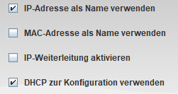
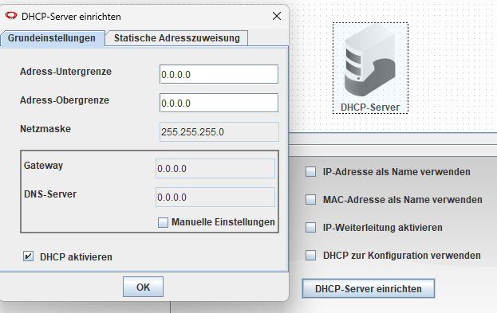

Welches Problem könnte auftreten, wenn der DHCP-Server nicht auf den DHCP-Request wartet und stattdessen annimmt, dass jedes DHCP-Offer automatisch angenommen wird?
Recherchiere, was in der Informatik unter einer „Race Condition“ verstanden wird, und erkläre den Zusammenhang zum DHCP-Acknowledgement.
Meist werden IP-Adressen nicht statisch vergeben (ein Endgerät hat immer die gleiche IP-Adresse), sondern dynamisch: Sobald das Gerät dem Netz beitritt, bekommt es eine IP-Adresse aus einem bestimmten Adressbereich. Diese Aufgabe übernimmt ein DHCP-Server. Er vergibt IP-Adressen aus vorgegebenen Adressbereichen an die Clients, die sich an ihn wenden.


ping.Ein Café in der Dresdner Neustadt betreibt ein Gäste-WLAN im Netz 192.168.40.0/26. Der Router hat 192.168.40.1; die Adressen .2 bis .9 sind für Kasse, Drucker und Access Points reserviert. Der DHCP-Server soll alle übrigen Adressen vergeben. Am Tag kommen etwa 150 Gäste mit Handy, die meisten bleiben eine bis zwei Stunden; höchstens 40 sind gleichzeitig da.